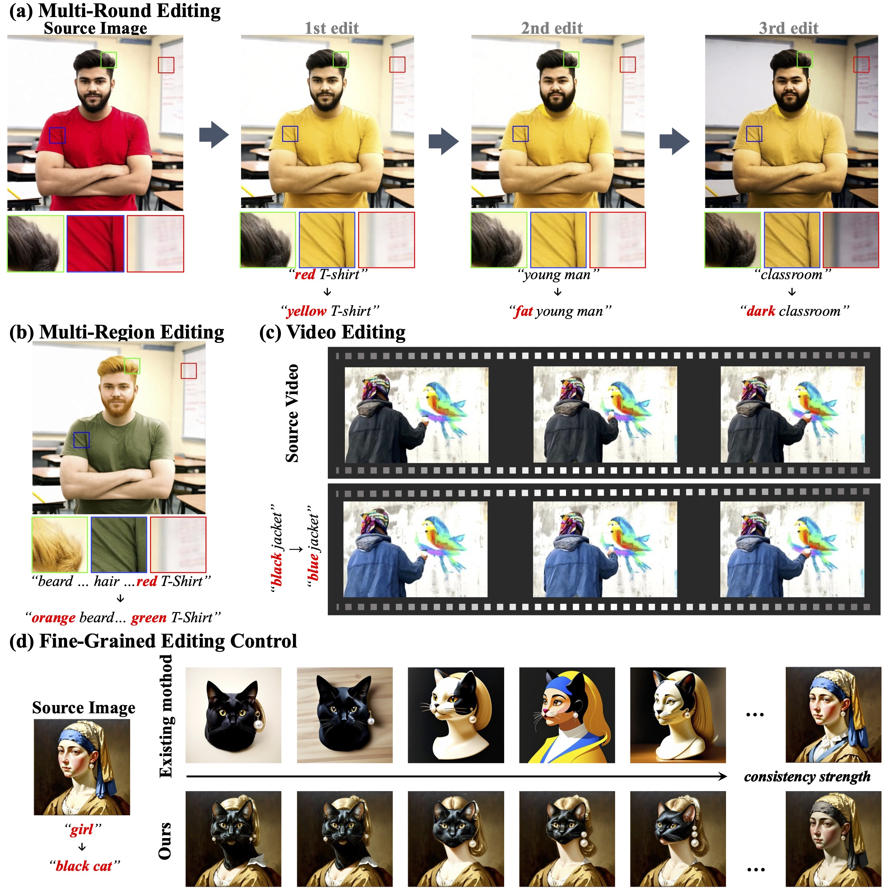
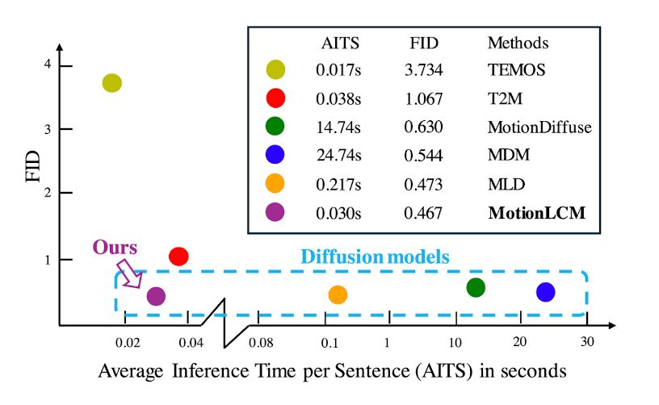
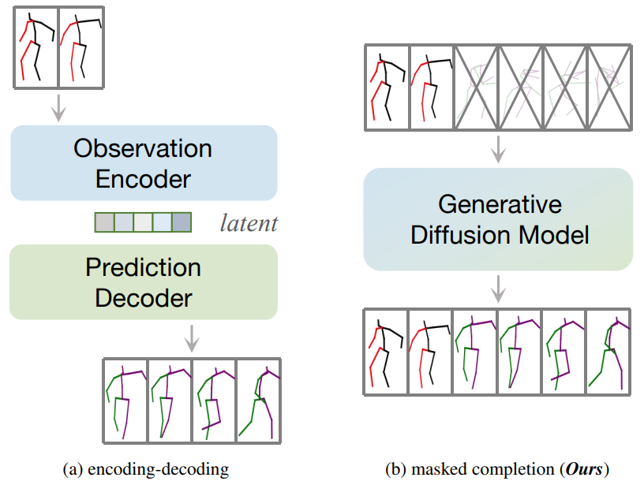
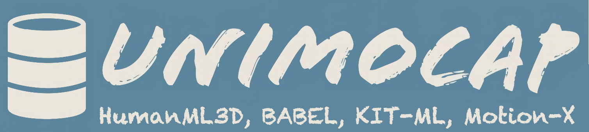

About Me
I'm Ling-Hao CHEN (陈凌灏 in Chinese, Evan in English)! I am now a Ph.D. candidate at Tsinghua University, supervised by Prof. Heung-Yeung Shum (沈向洋 教授). I obtained my bachelor's degree from the School of Computer Science and Technology at Xidian University in 2022. My research interests lie in Character Animation, Digital Generation, Embodied Intelligence, and Machine Learning. I am a research intern at the International Digital Economy Academy (IDEA), working closely with Prof. Lei Zhang (张磊 教授).
Address: Room 3908, Building 1, Chang Fu Jin Mao Tower, 5 Shihua Road, Futian District, Shenzhen, P.R. China.
Out of research: I am a part-time marathon runner and I began to make all my training logs public here since 2025.
Selected Publications
The full list of publications can be obtained via My Google Scholar.
Highlight Preprint
NEW UniVerse-1: Unified Audio-Video Generation via Stitching of Experts
Arxiv Preprint 2025
TLDR: We introduce UniVerse-1, the FIRST Veo-3 like model for audio-video joint generation.

Selected Publications
NEW Motion2Motion: Cross-topology Motion Transfer with Sparse Correspondence
ACM SIGGRAPH Conference and Exhibition on Computer Graphics and Interactive Techniques in Asia (ACM SIGGRAPH ASIA) 2025
TLDR: The FIRST cross-topology motion retargeting solution (WITHOUT deep models! run on CPU!).

NEW ConsistEdit: Highly Consistent and Precise Training-free Visual Editing
ACM SIGGRAPH Conference and Exhibition on Computer Graphics and Interactive Techniques in Asia (ACM SIGGRAPH ASIA) 2025, To Appear
TLDR: ConsistEdit is a training-free attention control method for MM-DiT that enables precise, structure-aware image and video editing.

HOT MotionLLM: Understanding Human Behaviors from Human Motions and Videos
IEEE Transactions on Pattern Analysis and Machine Intelligence (TPAMI) 2025
TLDR: This is the FIRST LLM-based (billion level) motion understanding model.

HOT MotionLCM: Real-time Controllable Motion Generation via Latent Consistency Model
European Conference on Computer Vision (ECCV) 2024
# Project lead.
TLDR: This is the FIRST time in the community to generate controllable motions in real time.
HumanTOMATO: Text-aligned Whole-body Motion Generation
International Conference on Machine Learning (ICML) 2024
TLDR: We present the FIRST attempt to generate whole-body motions with text description.

HumanMAC: Masked Motion Completion for Human Motion Prediction
IEEE/CVF International Conference on Computer Vision (ICCV) 2023
# Project lead.
TLDR: This is the FIRST attempt to predict human motion via training-free diffusion models.
Education
Tsinghua University
Shenzhen, P.R. China
Ph.D. Candidate, from Sep. 2022
Majored in Computer Science and Technology, supervised by Prof. Heung-Yeung Shum (沈向洋 教授).
Xidian University
Xi'an, P.R. China
B. Eng., from Sep. 2018 to June 2022
Majored in Software Engineering. Rank: 1/398 (less than 1%); GPA: 3.9/4.0.
News
Highlight Open-source Project

HOT UniMoCap: Unifier for Text-Motion Datasets
TLDR: UniMoCap is a community implementation to unify the text-motion datasets (HumanML3D, KIT-ML, and BABEL), support SMPL and SMPL-X formats.
Awards
NeurIPS 2023 Top Reviewer
Outstanding Graduate Scholarship
(the ONLY student in the S.E. department of XDU)
Principal Scholarship & First-class CASC Scholarship
(Only FIVE students in Xidian University for Principal Scholarship; the ONLY student in Xidian University for CASC Scholarship)
National Scholarship (less than 1%)
(For three years in my undergraduate life!)
Academic Service
Conference Reviewer or PC Member
ACM SIGGRAPH (2025), ACM SIGKDD (2024), ICLR (2024, 2025), NeurIPS (2023, 2024, 2025), ICML (2024, 2025), CVPR (2024, 2025), ICCV (2023, 2025), ECCV (2024), ICDM (2023), WACV (2026), ACL ARR (2024), AAAI (2024, 2025, 2026), UAI (2023), IJCAI (2024, 2025), ACM MM (2024), AISTATS (2024, 2025), ACML (2023).
Journal Reviewer
TVCG, TPAMI, TASE, TNNLS, ACM TIST, TMM.
Collaborators and Friends
Jingbo Wang (Shanghai AI Lab), Zhiyang Dou (MIT), Zixin Yin (HKUST), Xuan Ju (CUHK), Wenxun Dai (THU), Shunlin Lu (CUHK-SZ), Xiaobo Xia (NUS), Liangcai Su (THU)